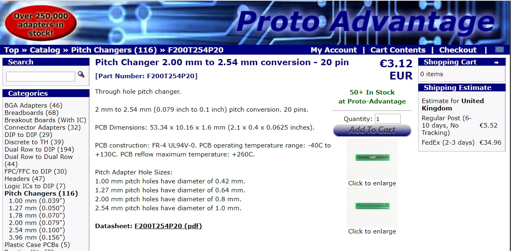
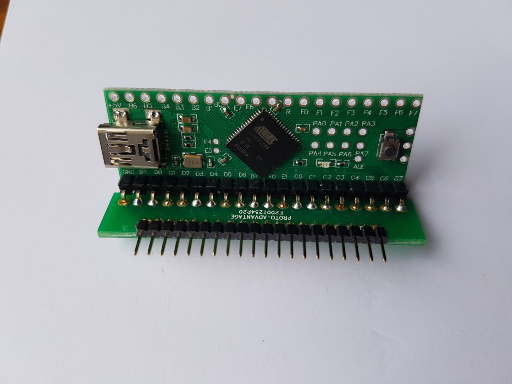
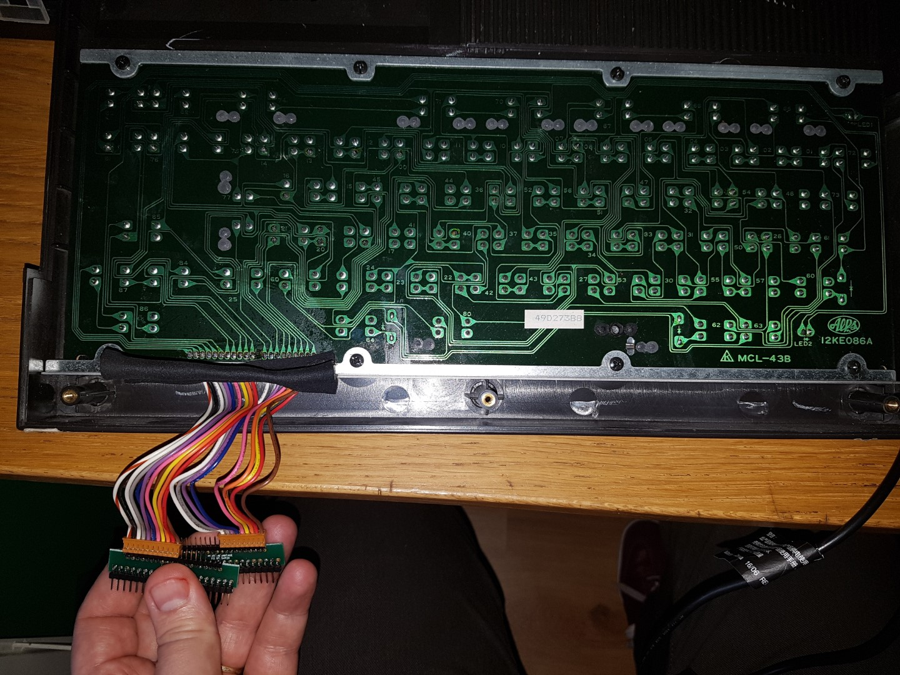
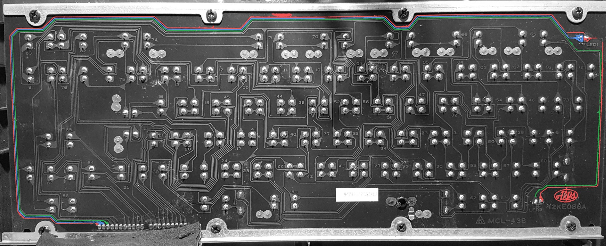
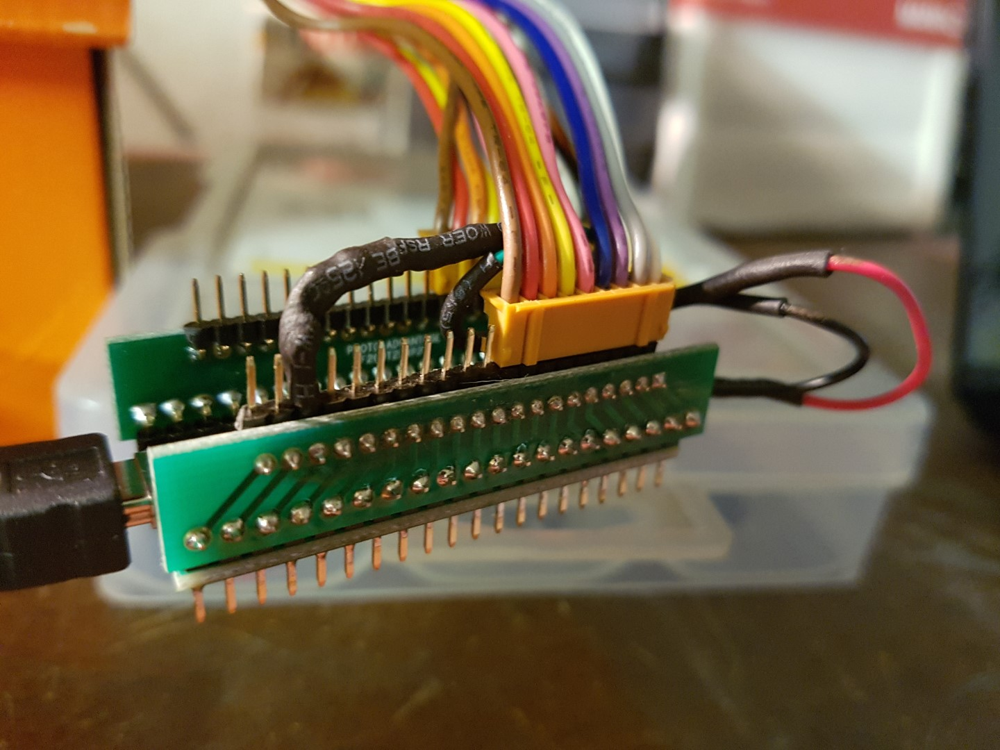
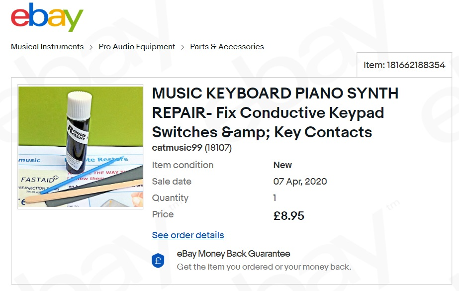
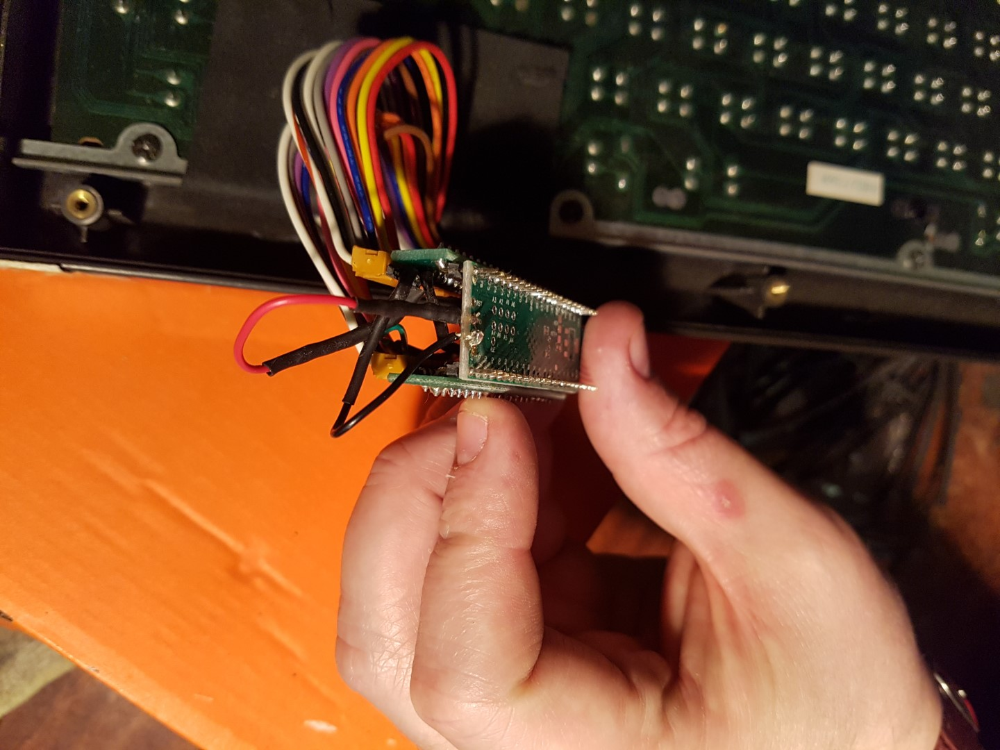

MSX HX-10 USB Keyboard
Intro
My First Computer was an MSX HX-10. At one point it stopped working because the joystick was continueing registering as being directed up. It's on my project list to try and repair the board but in the meantime I thought it was a good idea to setup the keyboard as a USB device (and at least get to use it).
{kind=link}
Firmware
https://github.com/tmk/tmk_keyboard https://github.com/peteclarkez/tmk_keyboard/tree/master/keyboard/msx_hx10
Upon looking at he options for making this work i found the tmk firmware. It was relatively easy to rebuild this to include the new keyboard details
The following links contained some good tutorials to get started.
Hardware
The adapter that used to connect the keboard to the board is a 2mm pitch so it's relatively easy to use an adapter to integrate this with a normal teensey board
|  | Adapter Hardware |
|  | Teensey & Adapter Hardware |
|  | Adapters connected to the keybaord matrix |
{kind=link}
{kind=link}
{kind=link}
Firmware Customisation
First thing was to use
{kind=link}
- MSX Generic KeyMap http://map.grauw.nl/articles/keymatrix.php
-
MSX Info Incl Txt Keymap http://problemkaputt.de/portar.htm#peripheralinterface
-
MSX HX-10 Firmware https://github.com/peteclarkez/tmk_keyboard/tree/master/keyboard/msx_hx10
LEDs
|  | I highlighted the trace on the image in order to ensure i got the right pins for the leds |
|  | Here we have a link attached to the pins overhanging the end of the chip in order to flash the led for power permanently and the caps lock when needed |
| ## Keyboard Fix |
{kind=link}
{kind=link}
When I got everything running There were a number of the keys which didn't work properly so I ordered an applied some keyboard fix to the electrical contacts.
http://www.nightfallcrew.com/16/12/2015/toshiba-hx-10-64k-msx-keyboard-pad-fix/
|  | Keyboard Fix |
{kind=link}
Toshiba MSX HX-10
Toshiba MSX HX-10
Other Links used in the making of this
{kind=link}
|  | |
{kind=link}